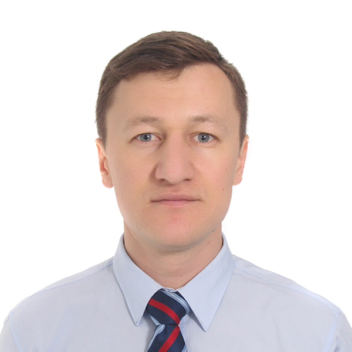

|  |
Yaroslav NovikovElectrician and Timber Frame House Constructor I study Web Development and I 💚 a life |
| 01/09/2003–15/07/2008 |
Diploma, qualification engineer |
|
Zhezkazgan Polytechnic University of O. A. Baykonurov, Zhezkazgan (Kazakhstan) 100600 Zhezkazgan (Kazakhstan) http://www.zhezu.kzThesis Title: Development of Site Machining of Flange Rotator Drilling Machine Paramatik 205-90. |
| Dates | Work |
|---|---|
| 01/01/2020-Present |
Electrician master |
Electrical work in apartments, private houses, streets, garages and business areas |
|
| 09/01/2017–10/12/2019 |
Building construction designer |
|
Construction company "Stroy-Expert", 38 Shevchenko Str.,100600 Zhezkazgan (Kazakhstan) http://www.pkst.kz
|
|
| 01/05/2013–01/02/2017 |
Carpenter, Master |
|
WROJW (Kazakhstan)
|
|
| 01/10/2010–01/04/2013 |
Underground duty electro-mechanic on repair of hydraulics |
|
"Kazakhmys" MSUSPE (Management Service Underground Self-Propelled Equipment) 101302 Satpayev (Kazakhstan) http://www.kazminerals.com/en/Underground duty electrical fitter(hydraulic). Plot CAT service
Business or sector Mining and quarrying |
|
| 01/09/2008–01/08/2009 |
Industrial-machinery mechanic and fitter |
|
Kazakhmys, a Branch of PRME(Plant Repair of the Mining Equipment) 101302 Satpayev (Kazakhstan) http://www.kazminerals.com/en/Assembly shop.
Business or sector Mining and quarrying |
| Electrician | ⭐⭐⭐⭐⭐ |
| Hydraulic | ⭐⭐⭐⭐⭐ |
| Web Development | ⭐⭐ |